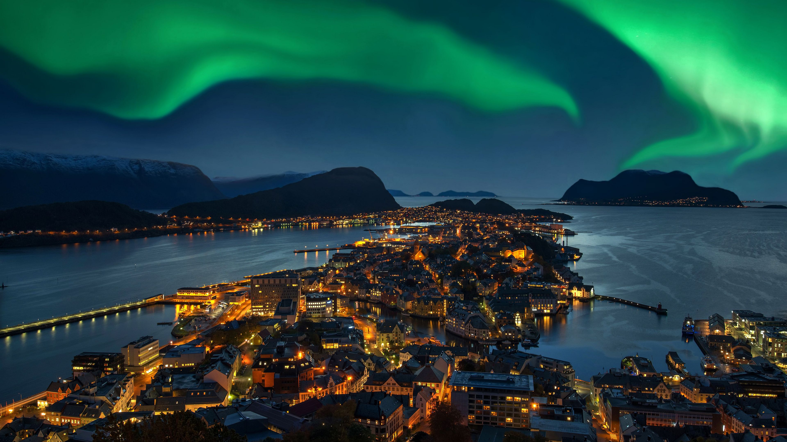
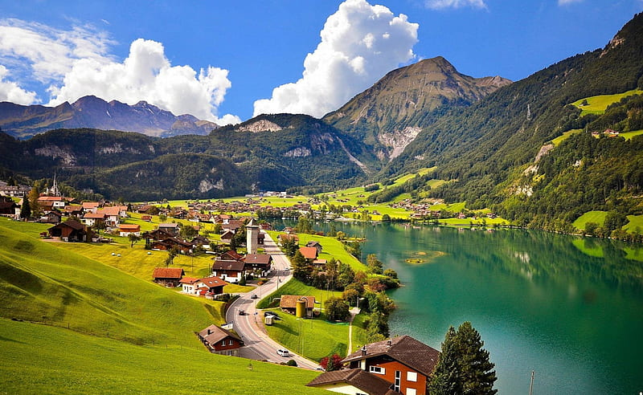

Norway

Norway is my dream destination because of its breathtaking natural beauty, from majestic fjords to pristine Arctic landscapes. The country's rich cultural heritage and historic towns add depth to its allure.Finally, the opportunity to witness the mesmerizing Northern Lights dancing across the Arctic skies would be a dream come true, making Norway a top destination on my travel bucket list.
Maldives

The Maldives' unparalleled natural beauty, featuring pristine beaches and crystal-clear waters, is a major draw for me.The opportunity to stay in luxurious overwater bungalows and resorts, set against this breathtaking backdrop, promises a truly indulgent experience.The vibrant marine life, including encounters with manta rays and colorful fish, make it a diver's paradise.
Switzerland

Switzerland, a dream destination, enchants with its majestic Alpine landscapes, pristine lakes, and charming villages. From skiing in the Swiss Alps to exploring historic cities like Zurich and Geneva, it offers a perfect blend of natural beauty and cultural richness. The precision of Swiss watchmaking and the allure of Swiss chocolate add to its allure. Switzerland is a picturesque haven for adventure and relaxation.